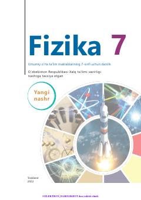

7F7-sinf o'quvchilari uchun fizika fanidan rasmiy darslik.
Mazkur darslik umumiy o'rta ta'lim maktablarining 7-sinf o'quvchilari uchun mo'ljallangan bo'lib, mexanik harakat, kuch, bosim va issiqlik hodisalari kabi fizik asoslarni o'rgatadi. Kitobda nazariy tushunchalar bilan birga amaliy mashqlar, laboratoriya ishlari va mantiqiy fikrlashga doir topshiriqlar berilgan.